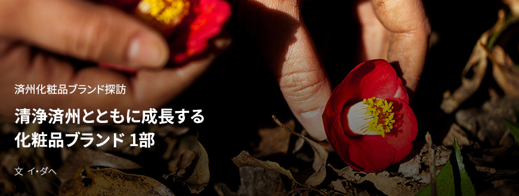
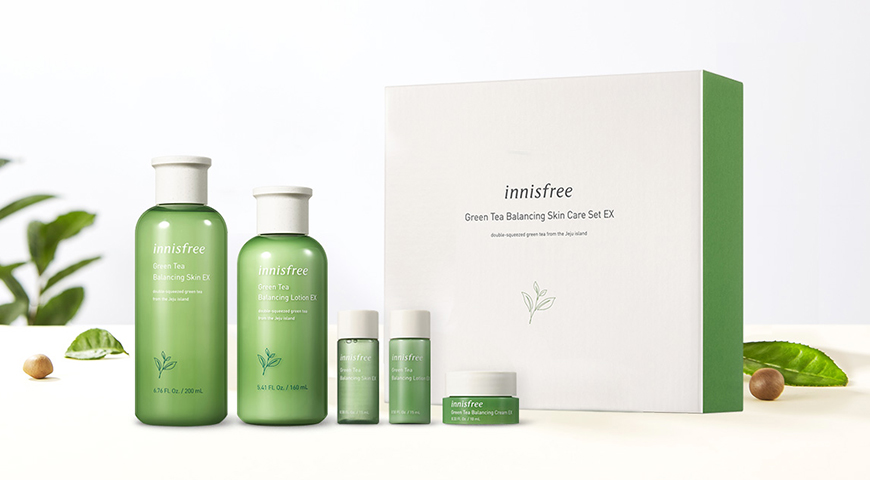

기획취재콘텐츠
- Home
- 제주라이프
- 기획취재콘텐츠
清浄済州とともに成長する化粧品ブランド 1部새로운 글



済州が化粧品原料の宝庫として注目されたことで、済州産化粧品に対する関心もいつになく熱い。 イニスフリー、ビヨンドなど従来の大企業の化粧品ブランドは、先を競って済州産の原料を使用した製品を発売した。済州で誕生したメイドイン済州の化粧品ブランドも好調だ。済州のタデ藍を活用した済州「インディ」、済州のエキナセア、島ウコギなど多様な植物性原料を使った基礎化粧品ラインを発売しているブランド「アッコジェ」など、済州産原料を積極的に使い、ブランドストーリーテリングとかみ合わせ、済州を訪問する旅行客はもちろん、国内外の消費者にブランドをアピールし、その認知度を高めている。済州産の化粧品原料に対する関心が増加すると、韓国を代表する化粧品のODM企業も済州に進出した。原料を引き続き発掘・開発し、済州のイメージを武器にした製品を生産するODM企業の活躍は済州化粧品原料産業はもちろん、済州化粧品産業が成長する土台を築いている。
済州の自然の価値を表す。自然主義化粧品ブランド、イニスフリー
自然主義化粧品ブランドイニスフリーと済州の歴史は数十年前にさかのぼる。アモーレパシフィックの創業者故ソ・ソンファン先代会長は
「韓国固有の茶文化を復活させたい」という執念で緑茶の栽培に最適な場所である済州に緑茶畑を作った。
- 西広茶園の緑茶畑の風景 ⓒイニスフリー -
アモーレパシフィックが作った緑茶畑で育った緑茶は飲むだけでなく肌に塗るお茶に生まれ変わった。数十年間の緑茶研究により化粧品原料としての機能を見つけ、これを活用した化粧品を作ったのである。韓国初の自然主義化粧品ブランドとしてスタートしたイニスフリーは済州緑茶を使用した「グリーンティーバランシングライン」をヒットさせ、名実ともに韓国を代表する化粧品ブランドに成長した。

- イニスフリー グリーンティーバランシング スキンケアセット ⓒイニスフリー -
「グリーンティーバランシングライン」をはじめとしてイニスフリーでは火山灰、寒蘭、ビジャ、椿、菜の花蜂蜜、サクラ、デコポンなど、計15種の済州産の原料を利用した化粧品を発売している。イニスフリーが済州産自然原料を使った製品を発売するたびに当該原料に対する関心も高まった。済州の寒蘭、ビジャ、椿、火山灰、溶岩海水などは以前から済州にあったものの大衆にはあまり知られておらず、自然資源の効能と美しさがイニスフリーのブランドとともに広く伝わった。それは済州という島が持つ独特な自然の特性に注目した文献研究からお肌に効能のある原料を発掘し、本土とは異なる特別な価値と原料ストーリーを生み出すという努力があったためである。
- イニスフリーエコサイエンスリンクルスポットエッセンス広告キャンペーン ⓒイニスフリー -
『クジラが子を産めばワカメを食べる』という文献に基づいて済州のワカメの効能を紹介した例があります。しわ改善機能性製品のリンクルスポットエッセンスのコア原料、済州の海のワカメとホンダワラ抽出物の再生エネルギーを効果的にアピールする方法として、『クジラが子を産めば、その年のワカメは凶作だといわれる』というストーリーを付け加え、海の植物が持つ再生能力と浄化機能を強調したストーリーテリングをキャンペーンで活用したのです。
- イニスフリーモウム財団ハン・チャンホ事務局長 -
イニスフリーの業績
| 区分 | 2010年 | 2010年 | 2012年 | 2013年 | 2014年 | 2015年 | 2016年 |
|---|---|---|---|---|---|---|---|
| 売上(成長率) | 828 | 1,405(69.69%) | 2,294(63.27%) | 3,328(45.07%) | 4,567(37.23%) | 5,921(29.65%) | 7,679(29.69%) |
| 営業利益(成長率) | 65 | 188(189.23%) | 363(93.09%) | 498(37.19%) | 765(53.61%) | 1,256(64.18%) | 1,965(56.45%) |

イニスフリーは2012年、中国上海に最初の店舗をオープンし中国市場に参入した。 済州の清浄原料と中国人が好む旅行先である済州のイメージが結合し、中国人観光客を魅了した。中国市場に参入した2012年、イネスフリーの売上は2,294億ウォン、営業利益は363億ウォンと、前年比それぞれ63%、93%成長し、その後も売上は年30%、営業利益は年50%以上の上昇傾向を維持した。
イニスフリーの活動は済州の原料を使って、ストーリーを付け加えた製品を発売、販売することだけに終わらない。済州という地域の持つ価値を伝え、地域経済の活性化に貢献するための様々な活動も並行して行なっている。
イニスフリーは「アリタウン(美しい)購買」という名前で済州の各村とコラボしている。「アリタウン購買」とは原料を選択して仕入れる過程で原料の安全性、環境保全、地域社会への貢献という三大原則を遵守し、環境と社会に積極的に貢献することを目的とするアモーレパシフィック固有の公正取引活動です。
- イニスフリーモウム財団ハン・チャンホ事務局長 -
- 椿村 ⓒイニスフリー -
イニスフリーのカメリアラインは済州道西帰浦市南元邑新興2里の「椿村」で採取された椿の花びらを直接購入している。また、済州市旧左邑の松堂村で購入したビジャの実はイニスフリーのビジャ製品ラインに使われる。イニスフリーと済州地域の公正取引文化は、企業の立場では地域社会の安全な原料を仕入れると同時に、栽培、加工、運搬の全過程で環境に及ぼす影響を最小限に止めることができ、地域の立場では安定的で持続的に原料を販売することができるという利点がある。
- 西広茶園イニスフリー済州ハウスの内部 ⓒイニスフリー -
西広茶園にあるイニスフリー済州ハウスは済州の緑茶を味わいながら楽しむ文化空間として済州観光客の足を引きつけている。済州の緑茶を使ったお茶とデザートを用意しており、済州の原料を活用した香水製品を試してみることもできる。さらに、済州でのみ購入可能なイニスフリー製品ラインを揃え、済州自然の美しさが溶け込んだライフスタイル製品を販売している。それに毎年、イニスフリーとともに多様な済州の美しさを紹介する旅行ガイドブック「済州エコーヒーリングトラベルブック」を発行している。済州の自然の大切さや美しさを伝える「済州ログブック」シリーズではコッチャワルの神秘的な姿と森を保護するための様々な努力を紹介している。
- イニスフリー済州プレイブック2015年～2018年 ⓒイニスフリー -
ブランド体験館「済州ハウス」も済州道で指折りのエコ建築物として評価されているだけでなく代表的な観光スポットの一つになりました。都心のイニスフリー店舗が自然とコミュニケーションする小さな窓口であるとすれば済州ハウスは本格的に自然と触れ合う場であると言えます。ブランドや旅行、そして文化を連携した様々なコンテンツが済州とイニスフリーの目に見えない絆をより明確に、固く繋いでくれると思います。
- イニスフリーモウム財団ハン・チャンホ事務局長 -
- 中東初のイニスフリーフラッグシップストア ⓒイニスフリー -
イニスフリーは韓国を含む全世界17カ国(2020年3月基準)で済州産原料を使った様々な化粧品ラインを発売している。2020年2月にはアラブ首長国連盟のドバイモールに中東初のイニスフリーフラッグシップストアをオープンした。店舗は済州の自然から得たインスピレーションと済州のヘリティッジを生かした天然原料をモチーフにしており、済州とイニスフリーとの連結性を強調した。
中東のフラッグシップストアを訪問した顧客は済州とイニスフリーの自然主義ストーリーに大きな興味を示します。済州の美しい自然が思い浮かぶ空間デザインなので、イニスフリーブランドのスローガンである「Natural benefits from JEJU」をより深く経験することができるということです。
- イニスフリーモウム財団ハン・チャンホ事務局長 -
長い間、しっかりと築き上げられたイニスフリーと済州の絆はブランドと地域がいかに共存できるかという問いに実践的な形で答えを示している。
이전글